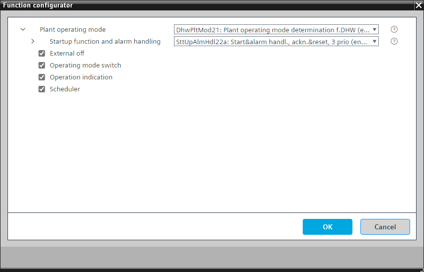

[DhwPltMod21] 生活热水工厂运行模式确定
Program block, name / node subtype: [DhwPltMod21] Plant operating mode determination for domestic hot water
Library hierarchy: Heating equipment
Family: DhwPltMod
项目树 | 图表 |
|---|---|
|
|
*SttUpAlmHdl21a 在系统版本 < 1.5 的控制器中 |


Configurator


程序块存储在没有 I/Os. 的库中 使用auto-create and auto-connect函数创建 I/Os 和 /or 将它们连接到接口块，例如 R_A、CMD_B。或者，从包含库中预定义 I/Os 的文件夹中取出 I/Os，并从工厂中取出 /or，并将它们连接到接口块。
通过考虑各种可能的来源（例如调度程序、手动操作、房间单元）来确定工厂运行模式。
Possible operating modes
运行模式 | 描述 |
|---|---|
离开 | 充电逻辑和充电电路关闭。 |
On | 充电逻辑和充电电路打开。 |
操作模式显示在 BACnet 上，具有多状态计算值“当前操作模式”，状态为“关闭”和“打开”。
程序中的一个参数被预设以防止设备运行。这对于测试数据点很有用。必须将其关闭才能启动设备。
"Startup function and alarm handling" controls the startup behavior of the plant after power-on.启动后有一个延迟，“DlySttUp”，大约 50 秒。 Do not change this delay.更改延迟“DlyOn”，以便每个工厂的延迟不同。这可确保工厂相继启动，并且不会使电气系统过载。还有来自工厂的所有故障和警报的收集和汇总。如果需要本地报警灯和/or 复位按钮，则可以选择替代方案。
该程序块具有以下可选功能：
Option: External off
可连接到用于关闭工厂的程序逻辑的接口。
Option: Operating mode switch (1xMI=2xBI)
读取操作模式开关的状态，通常位于电气面板的前面，状态为“自动”、“关闭”和“打开”。
Option: Operation indication (1xBO)
命令灯（通常为绿色），如果设备正在运行，则该灯亮起；如果正在进行切换操作，则该灯闪烁。
Option: Scheduler
MSCHED 类型的调度程序，具有“保护”、“经济”、“预舒适”和“舒适”状态，用于关闭和打开设备。
姓名 | 描述 | 类型 | 报警/通知类 | 趋势/类型 | |
|---|---|---|---|---|---|
OpModMan | Manual operating mode selection | MCnfVal: Multistate configuration value | N/A | 是的，4 | |
SttUpAlmHdl | Startup function and alarm handling | [SttUpAlmHdl22a] Startup & alarm handling, acknowledge & reset, 3 priorities | N/A | N/A | |
PrOpMod | Present operating mode | MCalcVal: Multistate calculated value | N/A | 是的，4 | |
RsnPrOpMod | Reason for present operating mode | MCalcVal: Multistate calculated value | No | 是的，4 | |
姓名 | 描述 | 类型 | 报警/通知类 | 趋势/类型 | |
|---|---|---|---|---|---|
OpModSwi | Operating mode switch | MI：多态输入 | No | 是的，4 | |
Sched | Scheduler | BSchedule: Binary scheduler | N/A | N/A | |
OpInd | Operation indication | BO：二进制输出 | No | 是的，4 | |
描述 |
|---|
External off |